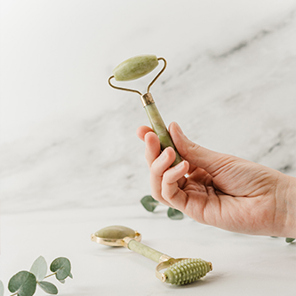

September 14, 2019
by Martina Novotová
#try#vegan#food
With popularity of veganism grows also demand for plant milk alternatives. These can cost slightly more than dairy milk and they usually come in tetrapak box which is not very eco-friendly. So why not make your own at home? You can make almond, poppy and coconut milk, but we reccommend oat milk the most because its carbon footprint is lowest compared to all of the alternatives. Preparation is very simple and fast and does not take more than 10 minutes if we soak ingredients overnight. Ingredients 100 grams oats 1 liter water 1 pinch salt 1 tbsp sweetener of choice Process Pour water the oats and let soak in the fridge overnight. 1. The next day, pour out the water and rinse the oats well. Put them in a blender, pour water over them (about 3 dl, not a whole liter!) And add a pinch of salt and a tablespoon of sweetener to taste It is possible to make milk without sweeteners, but it tastes much better if we put there a bit. 2. We mix everything well, only then we get the best possible taste. Only after mixing do we add the rest of the water. If you want milk thicker, almost like cream, then reduce the amount of water to half a liter or 6 dl. 3. Now we need to prepare a larger container, we use a large bowl, which we cover with a clean diaper (it is possible to use any kind of fabric, it is a matter of catching all of the little particles) and we lower it slightly into the inside of the bowl. Pour the entire contents onto the diaper so that the milk flows into the bowl and squeeze the mixture as dry as possible. 4. Such milk can be used as regular, cow's milk. However, we warn that oats tend to thicken when heated and have a more pronounced taste than, for example, almonds or coconut. Tip: Use the remaining pulp in baking or in your morning porridge.